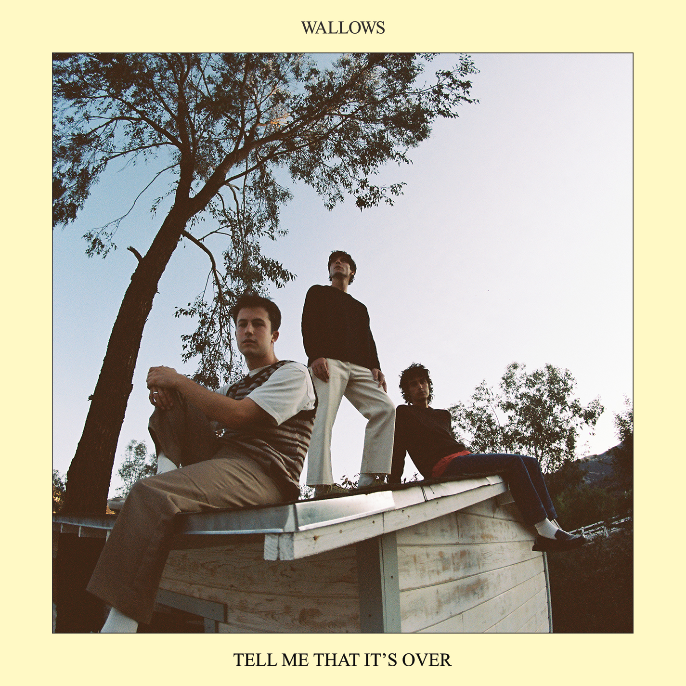
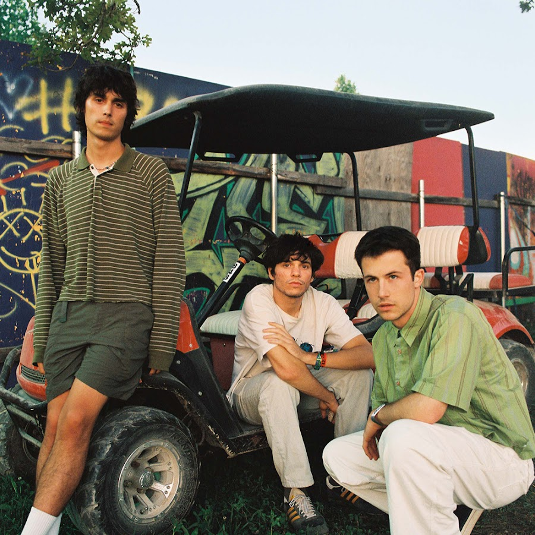
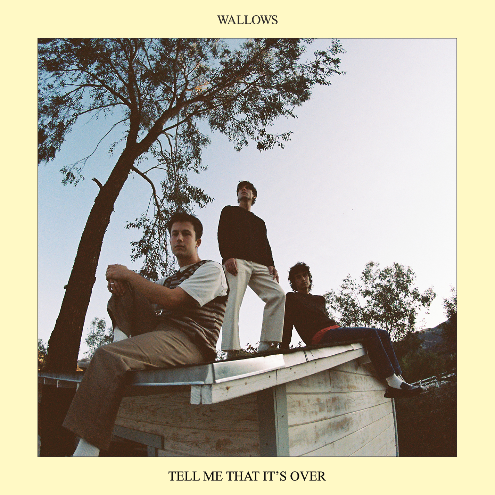
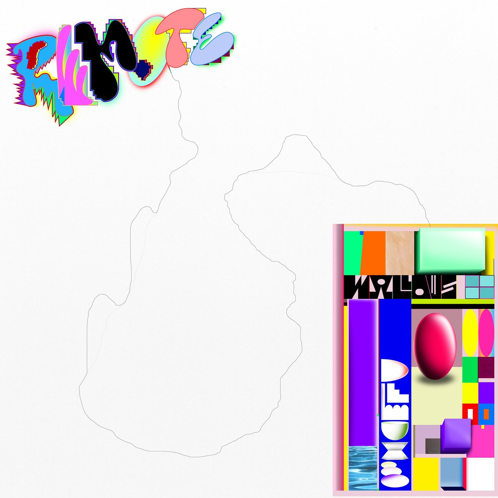

ALBUMS
Nothing Happens

March 22, 2019
Top Faves
1. "What You Like"
2. "Scrawny"
Tell Me That It's Over

March 25, 2022
Top Faves
1. "Guitar Romantic Search Adventure"
2. "Marvelous"

Wallows is an American alternative rock band based in Los Angeles composed of Dylan Minnette, Braeden Lemasters,
and Cole Preston. The band began releasing songs independently in April 2017, starting with "Pleaser", which reached
number two on the Spotify Global Viral 50 chart.
Wallows are Braeden Lemasters, Cole Preston, and Dylan Minnette. Their sophomore album, Tell Me That It's Over, featuring Marvelous, Especially You & I Don't Want to Talk was released on
March 25, 2022. Listen to Wallows' debut album Nothing Happens, Remote & Sping EP.
Genre: Alternative/Indie
ALBUMS
Nothing Happens
March 22, 2019
Top Faves
1. "What You Like"
2. "Scrawny"
Tell Me That It's Over

March 25, 2022
Top Faves
1. "Guitar Romantic Search Adventure"
2. "Marvelous"
EXTENDED PLAYS
Spring EP

April 6, 2018
Top Faves
1. "Picture of Girls"
2. "These Days"
Remote (Deluxe)

October 23, 2020
Top Faves
1. "Talk Like That"
2. "Virtual Aerobics"
1. Uncomfortable (Single)
2. That's What I Get (Tell Me That It's Over)
3. 1980s Horror Film II (Single)
4. Pulling Leaves Off Trees (Single)
5. Pleaser (Single)